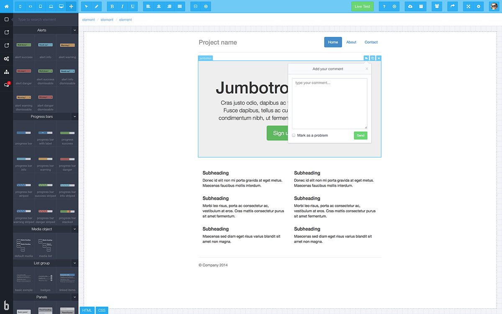
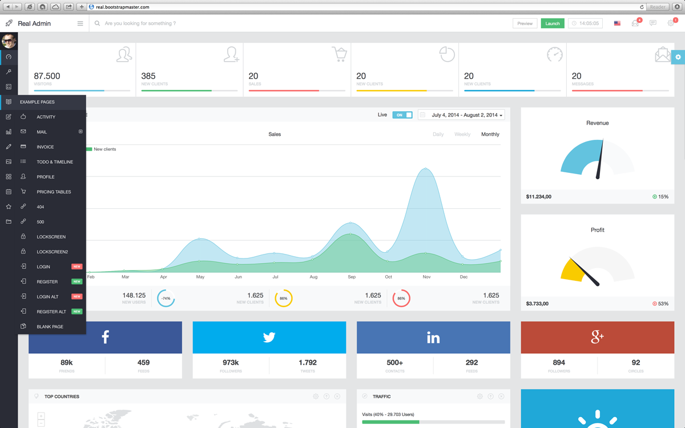
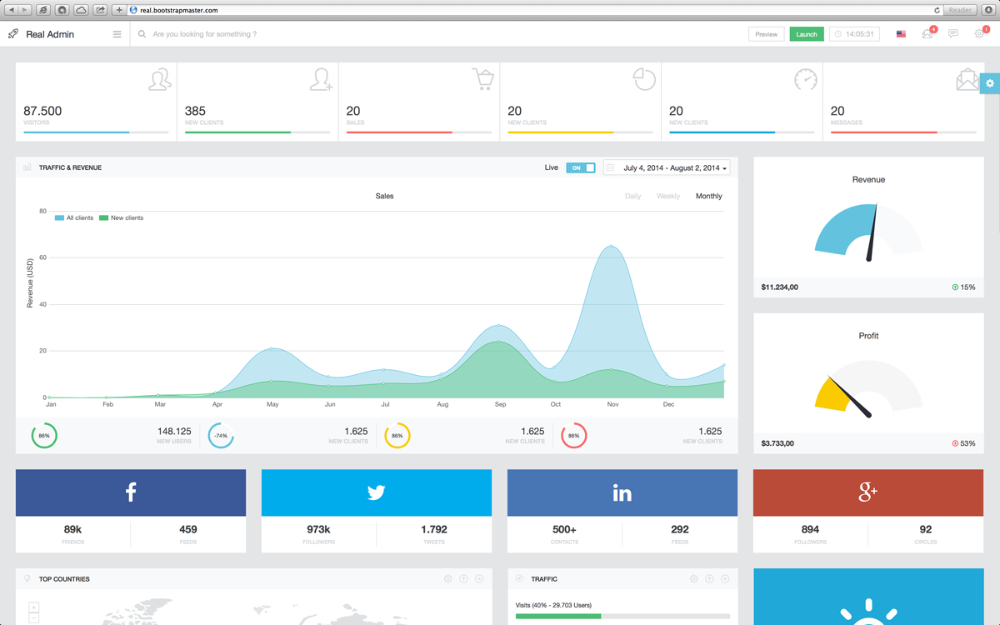
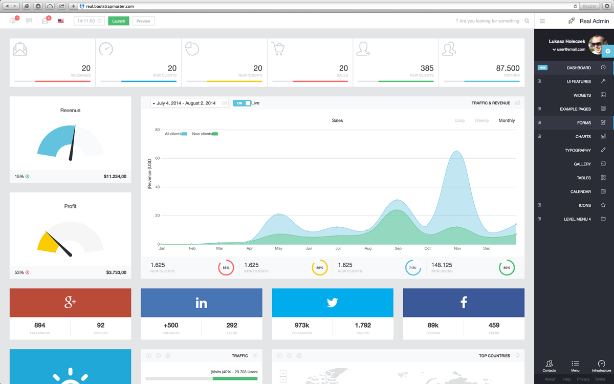
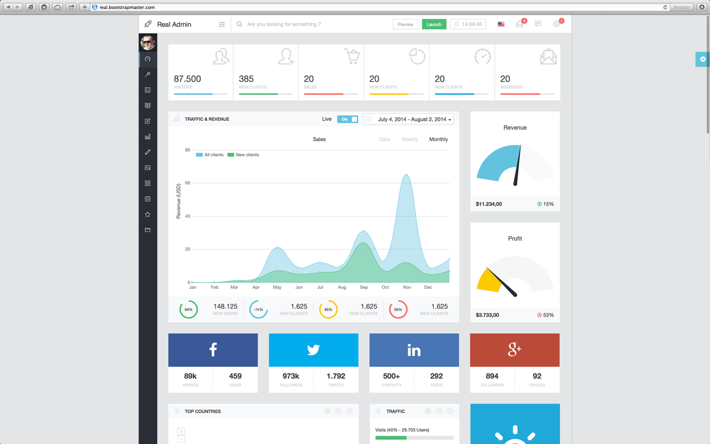
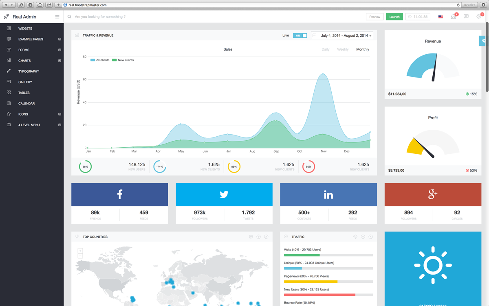
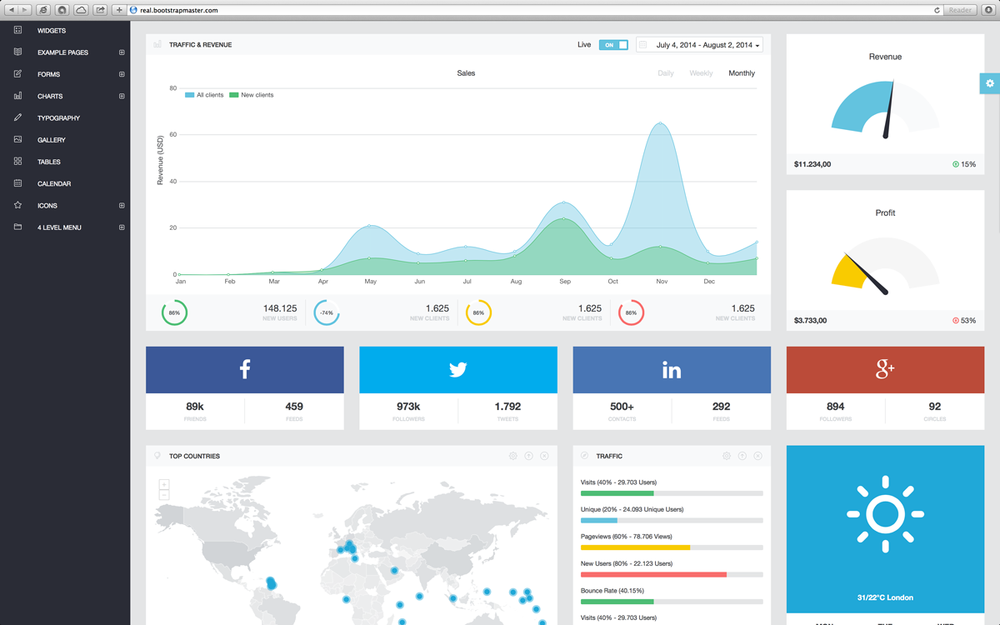

Thank you for purchasing Real Admin. If you have any questions feel free to email me: lukasz@bootstrapmaster.com
Real is built with the latest version of Bootstrap Framework. More informations and documentation you can find here: http://getbootstrap.com/
Bootstrap is the most popular HTML, CSS, and JS framework for developing responsive, mobile first projects on the web.
Brix.io (Bootstrap Builder) is the first fully featured tool on the market, which allows every user to design application, website or mobile app in accordance to his or her needs. The tool is a derivative of the best BootstrapMaster’s experiences gathered since the beginning of Bootstrap. That’s why Brix implements almost all ideas and needs which you might have during the design.

<!DOCTYPE html> <html lang="en"> <head> ... </head> <body> <div class="navbar"> ... </div> <div class="sidebar"> ... </div> <div class="main"> ... </div> <footer> ... </footer> </body> </html>
<link href="assets/css/bootstrap.min.css" rel="stylesheet" id="bootstrap-style"> <link href="assets/css/jquery.mmenu.css" rel="stylesheet"> <link href="assets/css/font-awesome.min.css" rel="stylesheet"> <link href="assets/css/style.min.css" rel="stylesheet" id="main-style">
<script src="assets/js/jquery-2.1.1.min.js"></script>
<script src="assets/js/jquery-1.11.1.min.js"></script> <script src="assets/js/jquery-migrate-1.2.1.min.js"></script>
<script src="assets/js/bootstrap.min.js"></script> <script src="assets/plugins/pace/pace.min.js"></script> <script src="assets/js/jquery.mmenu.min.js"></script> <script src="assets/js/core.min.js"></script>
Real has a number of different layout options.
Sidebar minified

Sidebar hidden

Right to Left

Boxed Layout

Static Sidebar

Static Header

In this file you find all most important scripts.
/*****
* CONFIGURATION
*/
$.ajaxLoad = true; // Active ajax page loader
$.defaultPage = 'pages/dashboard.html';
$.panelIconOpened = 'icon-arrow-up';
$.panelIconClosed = 'icon-arrow-down';
/*****
* ASYNC LOAD
* Load JS files and CSS files asynchronously in ajax mode
*/
function loadJS(jsFiles, pageScript) {
for(i=0;i Error 404! Page not found.');
},
async : false
});
}
/****
* MAIN NAVIGATION
*/
$(document).ready(function($){
if($('body').hasClass('rtl')) {
loadCSS('assets/css/bootstrap-rtl.min.css', loadCSS('assets/css/style.rtl.min.css',1,0))
}
$('.indicator').each(function(){
$(this).addClass($.mainMenuIndicatorClosed);
});
if($('#clock').length) {
startTime();
}
// Add class .active to current link - AJAX Mode off
$('ul.nav-sidebar').find('a').each(function(){
var cUrl = String(window.location);
if (cUrl.substr(cUrl.length - 1) == '#') {
cUrl = cUrl.slice(0,-1);
}
if ($($(this))[0].href==cUrl) {
$(this).parent().addClass('active');
$(this).parents('ul').add(this).each(function(){
$(this).show().parent().addClass('opened');
});
}
});
// Dropdown Menu
$('.nav-sidebar').on('click', 'a', function(e){
if ($.ajaxLoad) {
e.preventDefault();
}
console.log($(this).offset().top - $('.sidebar').offset().top);
if (!$(this).parent().hasClass('hover')) {
if ($(this).parent().find('ul').size() != 0) {
if ($(this).parent().hasClass('opened')) {
$(this).parent().removeClass('opened');
} else {
$(this).parent().addClass('opened');
}
$(this).parent().find('ul').first().slideToggle('slow',function(){
dropSidebarShadow();
});
$(this).parent().parent().find('ul').each(function(){
if (!$(this).parent().hasClass('opened')) {
$(this).slideUp();
}
});
if (!$(this).parent().parent().parent().hasClass('opened')) {
$('.nav a').not(this).parent().find('ul').slideUp('slow', function(){
$(this).parent().removeClass('opened').find('.opened').each(function(){
$(this).removeClass('opened');
});
});
}
} else {
if (!$(this).parent().parent().parent().hasClass('opened')) {
$('.nav a').not(this).parent().find('ul').slideUp('slow', function(){
$(this).parent().removeClass('opened').find('.opened').each(function(){
$(this).removeClass('opened')
});
});
}
}
}
});
$('.nav-sidebar > li').hover(
function(){
if($('body').hasClass('sidebar-minified')) {
$(this).addClass('opened hover');
}
}, function() {
if($('body').hasClass('sidebar-minified')) {
$(this).removeClass('opened hover');
}
}
);
/* ---------- Main Menu Open/Close, Min/Full ---------- */
$('#main-menu-toggle').click(function(){
if($('body').hasClass('sidebar-hidden')){
$('body').removeClass('sidebar-hidden');
} else {
$('body').addClass('sidebar-hidden');
}
});
$('#sidebar-menu').click(function(){
$(".sidebar").trigger("open");
});
$('#sidebar-minify').click(function(){
if($('body').hasClass('sidebar-minified')){
$('body').removeClass('sidebar-minified');
$('#sidebar-minify i').removeClass('fa-list').addClass('fa-ellipsis-v');
} else {
$('body').addClass('sidebar-minified');
$('#sidebar-minify i').removeClass('fa-ellipsis-v').addClass('fa-list');
}
});
widthFunctions();
dropSidebarShadow();
setUp();
$(".sidebar").mmenu();
/* ---------- Disable moving to top ---------- */
$('a[href="#"][data-top!=true]').click(function(e){
e.preventDefault();
});
});
/****
* PANELS ACTIONS
*/
$(document).on('click', '.panel-actions a', function(e){
e.preventDefault();
if ($(this).hasClass('btn-close')) {
$(this).parent().parent().parent().fadeOut();
} else if ($(this).hasClass('btn-minimize')) {
var $target = $(this).parent().parent().next('.panel-body');
if($target.is(':visible')) $('i',$(this)).removeClass($.panelIconOpened).addClass($.panelIconClosed);
else $('i',$(this)).removeClass($.panelIconClosed).addClass($.panelIconOpened);
$target.slideToggle('slow', function() {
widthFunctions();
});
} else if ($(this).hasClass('btn-setting')) {
$('#myModal').modal('show');
}
});
function setUp() {
/* ---------- Minimized panel ---------- */
$('.panel-minimized').find('.panel-actions i.' + $.panelIconOpened).removeClass($.panelIconOpened).addClass($.panelIconClosed);
/* ---------- Tooltip ---------- */
$('[rel="tooltip"],[data-rel="tooltip"]').tooltip({"placement":"bottom",delay: { show: 400, hide: 200 }});
/* ---------- Popover ---------- */
$('[rel="popover"],[data-rel="popover"],[data-toggle="popover"]').popover();
}
$('.sidebar-menu').scroll(function() {
dropSidebarShadow();
});
function dropSidebarShadow() {
if ($('.nav-sidebar').length) {
var topPosition = $('.nav-sidebar').offset().top - $('.sidebar').offset().top;
}
if (topPosition < 60) {
$('.sidebar-header').addClass('drop-shadow');
} else {
$('.sidebar-header').removeClass('drop-shadow');
}
var bottomPosition = $(window).height() - $('.nav-sidebar').outerHeight() - topPosition;
if (bottomPosition < 130) {
$('.sidebar-footer').addClass('drop-shadow');
} else {
$('.sidebar-footer').removeClass('drop-shadow');
}
}
/****
* CHECK BROWSER VERSION
*/
function browser() {
var isOpera = !!(window.opera && window.opera.version); // Opera 8.0+
var isFirefox = testCSS('MozBoxSizing'); // FF 0.8+
var isSafari = Object.prototype.toString.call(window.HTMLElement).indexOf('Constructor') > 0;
// At least Safari 3+: "[object HTMLElementConstructor]"
var isChrome = !isSafari && testCSS('WebkitTransform'); // Chrome 1+
//var isIE = /*@cc_on!@*/false || testCSS('msTransform'); // At least IE6
function testCSS(prop) {
return prop in document.documentElement.style;
}
if (isOpera) {
return false;
}else if (isSafari || isChrome) {
return true;
} else {
return false;
}
}
/****
* CHECK IF RETINA DISPLAY
*/
function retina(){
retinaMode = (window.devicePixelRatio > 1);
return retinaMode;
}
/****
* CHARTS
* This function activate all widgets with charts
*/
function activeCharts() {
if($(".boxchart").length) {
if (retina()) {
$(".boxchart").sparkline('html', {
type: 'bar',
height: '60', // Double pixel number for retina display
barWidth: '8', // Double pixel number for retina display
barSpacing: '2', // Double pixel number for retina display
barColor: '#ffffff',
negBarColor: '#eeeeee'}
);
if (jQuery.browser.mozilla) {
if (!!navigator.userAgent.match(/Trident\/7\./)) {
$(".boxchart").css('zoom',0.5);
$(".boxchart").css('height','30px;').css('margin','0px 15px -15px 17px');
} else {
$(".boxchart").css('MozTransform','scale(0.5,0.5)').css('height','30px;');
$(".boxchart").css('height','30px;').css('margin','-15px 15px -15px -5px');
}
} else {
$(".boxchart").css('zoom',0.5);
}
} else {
$(".boxchart").sparkline('html', {
type: 'bar',
height: '30',
barWidth: '4',
barSpacing: '1',
barColor: '#ffffff',
negBarColor: '#eeeeee'}
);
}
}
if($(".linechart").length) {
if (retina()) {
$(".linechart").sparkline('html', {
width: '130',
height: '60',
lineColor: '#ffffff',
fillColor: false,
spotColor: false,
maxSpotColor: false,
minSpotColor: false,
spotRadius: 2,
lineWidth: 2
});
if (jQuery.browser.mozilla) {
if (!!navigator.userAgent.match(/Trident\/7\./)) {
$(".linechart").css('zoom',0.5);
$(".linechart").css('height','30px;').css('margin','0px 15px -15px 17px');
} else {
$(".linechart").css('MozTransform','scale(0.5,0.5)').css('height','30px;');
$(".linechart").css('height','30px;').css('margin','-15px 15px -15px -5px');
}
} else {
$(".linechart").css('zoom',0.5);
}
} else {
$(".linechart").sparkline('html', {
width: '65',
height: '30',
lineColor: '#ffffff',
fillColor: false,
spotColor: false,
maxSpotColor: false,
minSpotColor: false,
spotRadius: 2,
lineWidth: 1
});
}
}
if($('.chart-stat').length) {
if (retina()) {
$(".chart-stat > .chart").each(function(){
var chartColor = $(this).css('color');
$(this).sparkline('html', {
width: '180%',//Width of the chart - Defaults to 'auto' - May be any valid css width - 1.5em, 20px, etc (using a number without a unit specifier won't do what you want) - This option does nothing for bar and tristate chars (see barWidth)
height: 80,//Height of the chart - Defaults to 'auto' (line height of the containing tag)
lineColor: chartColor,//Used by line and discrete charts to specify the colour of the line drawn as a CSS values string
fillColor: false,//Specify the colour used to fill the area under the graph as a CSS value. Set to false to disable fill
spotColor: false,//The CSS colour of the final value marker. Set to false or an empty string to hide it
maxSpotColor: false,//The CSS colour of the marker displayed for the maximum value. Set to false or an empty string to hide it
minSpotColor: false,//The CSS colour of the marker displayed for the mimum value. Set to false or an empty string to hide it
spotRadius: 2,//Radius of all spot markers, In pixels (default: 1.5) - Integer
lineWidth: 2//In pixels (default: 1) - Integer
});
if (jQuery.browser.mozilla) {
if (!!navigator.userAgent.match(/Trident\/7\./)) {
$(this).css('zoom',0.5);
} else {
$(this).css('MozTransform','scale(0.5,0.5)');
$(this).css('height','40px;').css('margin','-20px 0px -20px -25%');
}
} else {
$(this).css('zoom',0.5);
}
});
} else {
$(".chart-stat > .chart").each(function(){
var chartColor = $(this).css('color');
$(this).sparkline('html', {
width: '90%',//Width of the chart - Defaults to 'auto' - May be any valid css width - 1.5em, 20px, etc (using a number without a unit specifier won't do what you want) - This option does nothing for bar and tristate chars (see barWidth)
height: 40,//Height of the chart - Defaults to 'auto' (line height of the containing tag)
lineColor: chartColor,//Used by line and discrete charts to specify the colour of the line drawn as a CSS values string
fillColor: false,//Specify the colour used to fill the area under the graph as a CSS value. Set to false to disable fill
spotColor: false,//The CSS colour of the final value marker. Set to false or an empty string to hide it
maxSpotColor: false,//The CSS colour of the marker displayed for the maximum value. Set to false or an empty string to hide it
minSpotColor: false,//The CSS colour of the marker displayed for the mimum value. Set to false or an empty string to hide it
spotRadius: 2,//Radius of all spot markers, In pixels (default: 1.5) - Integer
lineWidth: 2//In pixels (default: 1) - Integer
});
});
}
}
}
/****
* TODO LIST WIDGET
* Active TODO List widget
* Require: jQuery UI
*/
function todoList() {
$(".todo-list-tasks").sortable({
connectWith: ".todo-list-tasks",
cancel: ".disabled"
});
$('.todo-list-tasks').on('change', '.custom-checkbox', function(){
$(this).parent().parent().clone().appendTo('.completed').addClass('disabled').find('.custom-checkbox').attr('disabled',true);
$(this).parent().parent().slideUp( "slow", function() {
$(this).remove();
//add your function here
});
});
$(".todo-list").disableSelection();
$('#add-task').click(function(){
$('#todo-1').append('' + $('#task-description').val() + '');
});
}
/****
* Discussions WIDGET
* Active Discussions widget
*/
function discussionWidget() {
$('.discussions').find('.delete').click(function(){
$(this).parent().fadeTo("slow", 0.00, function(){ //fade
$(this).slideUp("slow", function() { //slide up
$(this).remove(); //then remove from the DOM
//add your function here
});
});
});
}
/****
* Clock
*/
function startTime() {
var today=new Date();
var h=today.getHours();
var m=today.getMinutes();
var s=today.getSeconds();
m = checkTime(m);
s = checkTime(s);
document.getElementById('clock').innerHTML = h+":"+m+":"+s;
var t = setTimeout(function(){startTime()},500);
}
function checkTime(i) {
if (i<10) {i = "0" + i}; // add zero in front of numbers < 10
return i;
}
/****
* SMART RESIZE
*/
$(window).bind("resize", widthFunctions);
function widthFunctions(e) {
var headerHeight = $('.navbar').outerHeight();
var footerHeight = $('footer').outerHeight();
var winHeight = $(window).height();
var winWidth = $(window).width();
if(!$('body').hasClass('static-sidebar')) {
$('.sidebar-menu').css('height', winHeight - 190);
}
if (winWidth < 992) {
if ( $('body').hasClass('sidebar-hidden') ) {
$('body').removeClass('sidebar-hidden').addClass('sidebar-hidden-disabled');
}
if ( $('body').hasClass('sidebar-minified') ) {
$('body').removeClass('sidebar-minified').addClass('sidebar-minified-disabled');
}
$('#sidebar-minify i').removeClass('fa-list').addClass('fa-ellipsis-v');
} else {
if ( $('body').hasClass('sidebar-hidden-disabled') ) {
$('body').removeClass('sidebar-hidden-disabled').addClass('sidebar-hidden');
}
if ( $('body').hasClass('sidebar-minified-disabled') ) {
$('body').removeClass('sidebar-minified-disabled').addClass('sidebar-minified');
}
}
if (winWidth > 768) {
$('.main').css('min-height',winHeight-footerHeight);
}
}
/*! * Author: Łukasz Holeczek * Template: Real Admin - Bootstrap Admin Template * Version: 1.0.0 * Bootstrap version: 3.2.0 * Prototyped with: http://brix.io * Copyright 2014 creativeLabs * www: http://bootstrapmaster.com * mail: lukasz@bootstrapmaster.com * You can buy this theme on: http://bootstrapmaster.com * You can find our other themes on: http://bootstrapmaster.com */ // Import LESS Files //=================================================================== @import "main/main.less"; @import "main/colors.less"; @import "main/mixins.less"; @import "main/header.less"; @import "main/sidebar.less"; @import "main/sidebar-minified.less"; @import "main/sidebar-hidden.less"; @import "main/buttons.less"; @import "main/tabs.less"; @import "main/forms.less"; @import "main/modal.less"; @import "main/collapse.less"; @import "main/progress_bars.less"; @import "main/pagination.less"; @import "main/panels.less"; @import "main/alerts.less"; @import "main/labels.less"; @import "main/footer.less"; @import "main/static-header.less"; @import "main/static-sidebar.less"; @import "main/container.less"; // Other Files //=================================================================== @import "main/others.less"; @import "main/demo.less"; // Example Pages //=================================================================== @import "main/page-activity.less"; @import "main/page-inbox.less"; @import "main/page-invoice.less"; @import "main/page-todo.less"; @import "main/page-profile.less"; @import "main/page-login-register.less"; @import "main/page-pricing-tables.less"; @import "main/page-error.less"; @import "main/page-lockscreen.less"; // Responsive //=================================================================== @import "main/responsive.less";
/*! * Author: Łukasz Holeczek * Template: Real Admin - Bootstrap Admin Template * Version: 1.0.0 * Bootstrap version: 3.2.0 * Prototyped with: http://brix.io * Copyright 2014 creativeLabs * www: http://bootstrapmaster.com * mail: lukasz@bootstrapmaster.com * You can buy this theme on: http://bootstrapmaster.com * You can find our other themes on: http://bootstrapmaster.com */ // Import LESS Files //=================================================================== @import "main/colors.less"; @import "main/mixins.less"; // My Custom Styles //=================================================================== @import "add-ons/charts.less"; @import "add-ons/smallstats.less"; @import "add-ons/activity.less"; @import "add-ons/calendar.less"; @import "add-ons/users-list.less"; @import "add-ons/comments-list.less"; @import "add-ons/todo.less"; @import "add-ons/sliders.less"; @import "add-ons/switch-input.less"; @import "add-ons/table.less"; @import "add-ons/weather.less"; @import "add-ons/info-box.less"; @import "add-ons/social-box.less"; @import "add-ons/statistics.less"; // Components //=================================================================== @import "add-ons/datatables.less"; @import "add-ons/justgage.less"; @import "add-ons/nestable.less"; @import "add-ons/wizard.less"; @import "add-ons/datepicker.less"; @import "add-ons/timepicker.less"; @import "add-ons/daterangepicker.less"; @import "add-ons/colorpicker.less"; @import "add-ons/notifications.less";
We've used following plugins in this theme:
We've used following icons in this theme:
web: https://bootstrapmaster.com
email: lukasz@bootstrapmaster.com